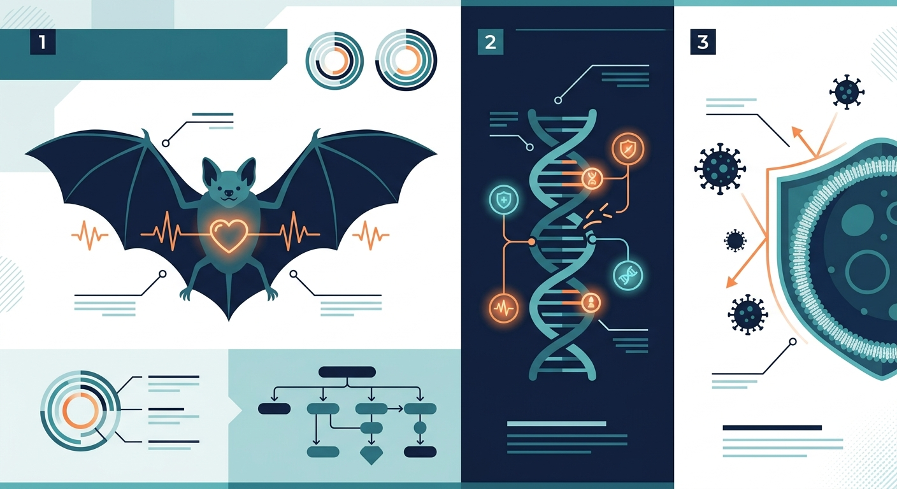

Secrets of the Centenarian of the Skies: How Bat Genomes Are Rewriting the Rules of Aging and Immunity

In the damp, dark recesses of temperate caves across the globe, a biological miracle is hiding in plain sight. It weighs no more than a single coin, possesses a heart rate that can top 1,000 beats per minute during flight, and lives in high-density colonies that are hotbeds for deadly viruses. By all the traditional rules of biology, this creature should burn out and die within a couple of winters.
Instead, the Myotis bat can live for over forty years.
In the mammalian world, lifespan is almost always a function of size. A shrew lives fast and dies young; a bowhead whale moves slowly and lives for centuries. If humans shared the weight-to-lifespan ratio of a Myotis bat, we would routinely live to see our 800th birthdays. Even more astonishingly, these tiny aviators harbor some of the world's most lethal pathogens—from coronaviruses to lyssaviruses—without showing any signs of clinical disease. They do not get cancer, they do not suffer from cognitive decline, and they do not succumb to the cytokine storms that ravage human lungs during viral infections.
Now, we finally know how they do it. In a landmark study published in the journal Nature, an international consortium of scientists has cracked open the genomic blueprint of the Myotis genus, revealing a masterclass in evolutionary engineering that could hold the key to expanding the human healthspan.
The Flight Furnace and the DNA Dilemma
To understand the bat’s longevity, you must first understand the sheer physical toll of flight. Flapping wings requires an immense amount of energy, spiking a bat’s metabolic rate to levels that would cook a rodent’s organs. This hyper-metabolism floods the bat's cells with reactive oxygen species (ROS)—highly destructive molecules that tear apart DNA, warp proteins, and trigger chronic, systemic inflammation.
For a mouse, this level of oxidative stress is a death sentence. For the Myotis bat, it is just another Tuesday.
By performing a massive comparative genomic analysis across various Myotis species, researchers discovered that these bats have evolved a highly specialized toolkit of genomic defenses. Rather than trying to prevent oxidative damage altogether, they have supercharged their DNA repair machinery. The study revealed unique duplication events and positive selection in genes responsible for double-strand break repair and chromosome maintenance. It is as if the bats have replaced a slow, manual cellular repair crew with an automated, 24/7 robotic assembly line that patches genomic tears before they can seed tumors or cellular senescence.
Silencing the Alarm: The Immune Balancing Act
Perhaps the most profound discovery lies in how Myotis bats manage their immune systems. In humans, aging is driven largely by "inflammaging"—a state of chronic, low-grade inflammation that degrades tissues over time and underpins diseases like Alzheimer's, atherosclerosis, and arthritis. When we get sick, our immune system often overreacts, launching a scorched-earth defense (like the NLRP3 inflammasome pathway) that causes more damage to our tissues than the virus itself.
The Myotis genome, however, shows a highly orchestrated muting of this inflammatory fire alarm. The researchers found that these bats have systematically lost or modified key genes involved in the inflammatory response, particularly within the NLRP3 pathway.
But this isn't just immune suppression—it is immune tuning. While the bat's inflammatory response is dialed down to prevent self-destruction, its baseline antiviral defenses are constantly on high alert. The genomic analysis showed a massive expansion of interferon-stimulated genes, keeping viral replication in a permanent state of checkmate. The bat doesn't try to eradicate the virus; it negotiates a peaceful coexistence. In doing so, it avoids both viral death and inflammatory aging.
From Cave to Clinic: The Longevity Investment Thesis
For biotech investors and longevity scientists, the Myotis genome is not just an evolutionary curiosity; it is a proprietary, millions-of-years-old R&D pipeline waiting to be exploited.
The therapeutic implications are immediate. The multi-billion-dollar race to develop NLRP3 inhibitors for age-related inflammatory diseases now has a nature-tested blueprint. By studying the precise mutations that allow Myotis to tolerate systemic stressors, drug developers can design highly targeted small molecules and gene therapies that mimic these adaptations in humans.
We are looking at a future where we don't just treat the symptoms of aging, but actively reprogram human biology to tolerate the metabolic stresses of life. The centenarians of the sky have shown us that extreme longevity combined with robust health is not a biological impossibility—it is simply a matter of genomic design.
Sources & Citations:
Primary Source: Insights into longevity and virus-driven adaptation from Myotis bat genomes. (Nature)
- Knörnschild, M., et al. (2026). Insights into longevity and virus-driven adaptation from Myotis bat genomes. Nature. https://doi.org/10.1038/s41586-026-10932-7